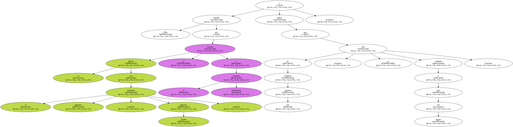
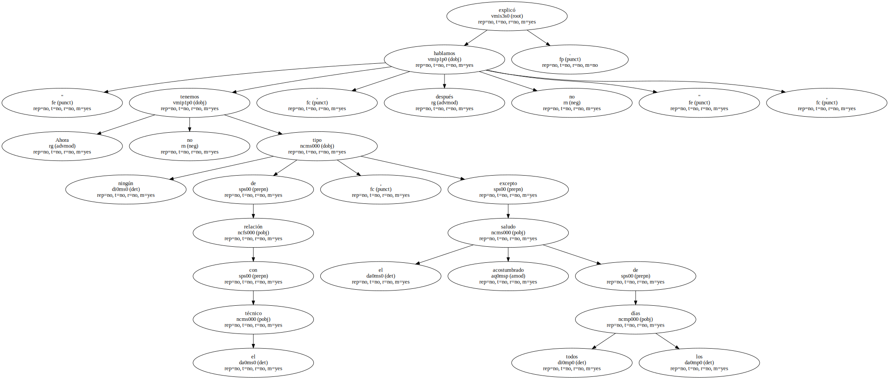
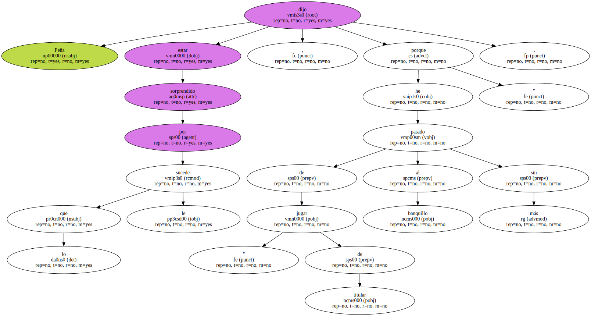
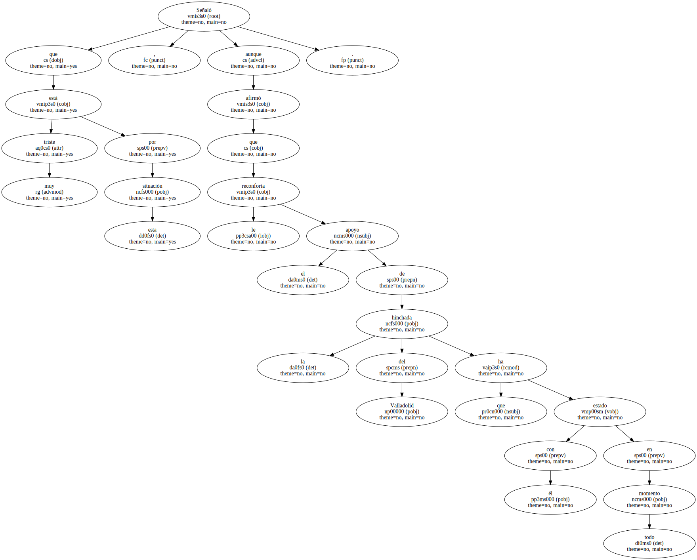
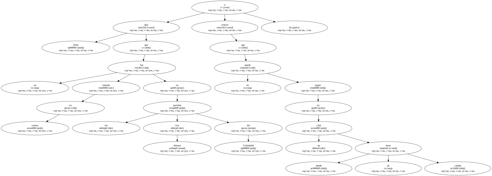
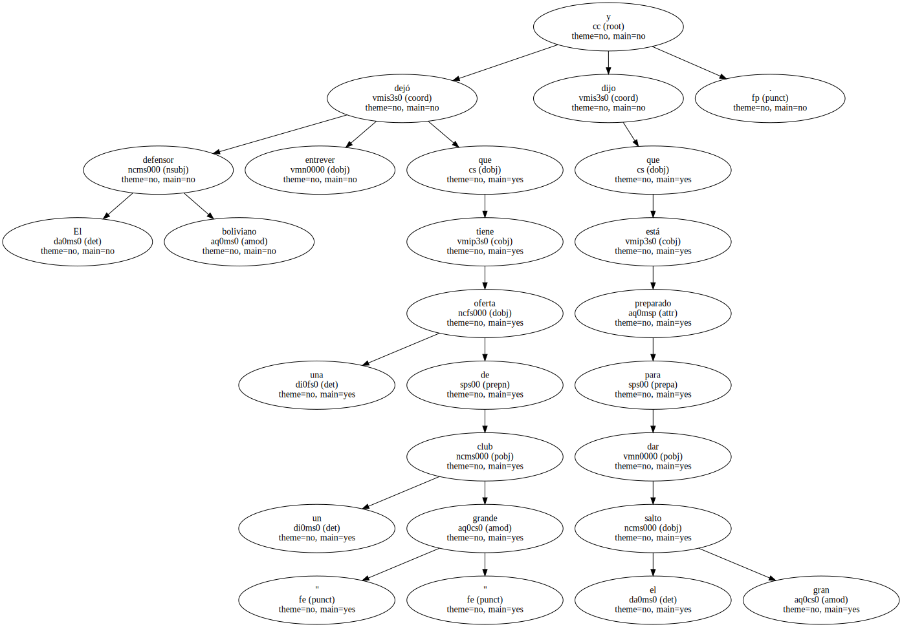

El defensa boliviano Juan Manuel Peña , que juega en el Valladolid de España , anunció desde Madrid a un canal de televisión cruceño que está pensando en cambiar de equipo porque la relación con el nuevo director técnico no es buena.

Peña admitió que su relación con el entrenador argentino , Francisco Ferraro , se concreta a lo estrictamente necesario y afirmó que de continuar esta situación " se verá obligado a salir del equipo ".
" Ahora no tenemos ningún tipo de relación con el técnico , excepto el acostumbrado saludo de todos los días , después no hablamos " , explicó.
Peña dijo estar sorprendido por lo que le sucede , porque de " jugar de titular he pasado al banquillo sin más ".
Señaló que está muy triste por esta situación , aunque afirmó que le reconforta el apoyo de la hinchada del Valladolid que ha estado con él en todo momento.
Peña dijo que no fue tomado en cuenta en los últimos tres partidos del Valladolid y reiteró que no puede seguir en un club donde no tiene cabida.
El defensor boliviano dejó entrever que tiene una oferta de un club " grande " y dijo que está preparado para dar el gran salto.
